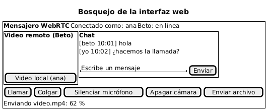
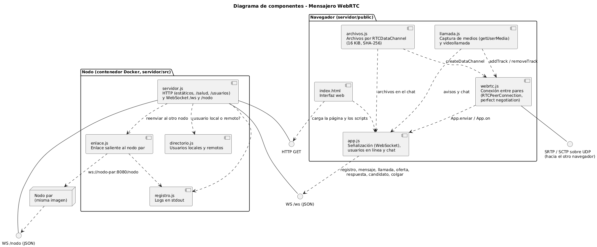
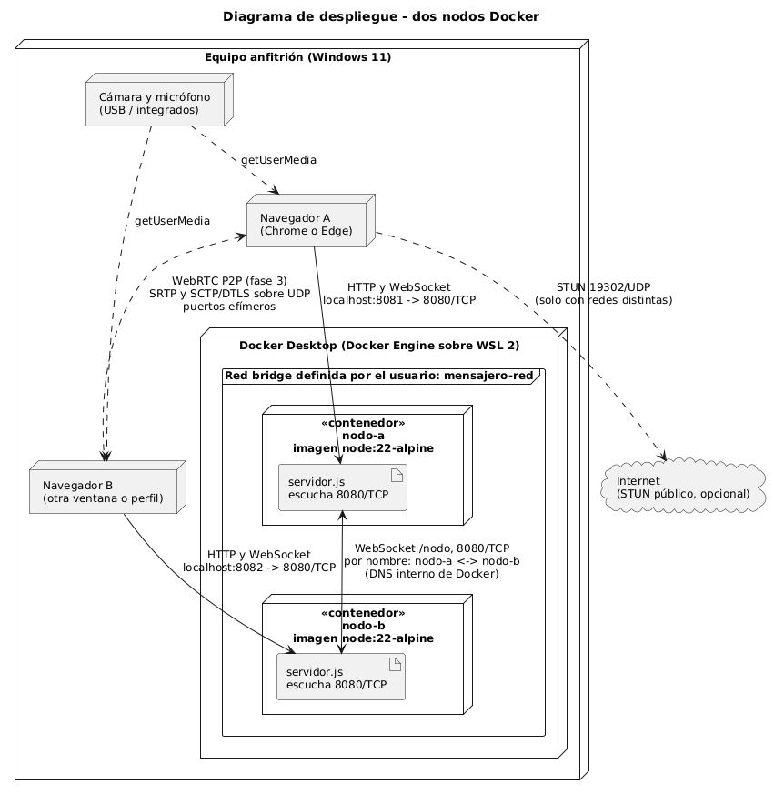
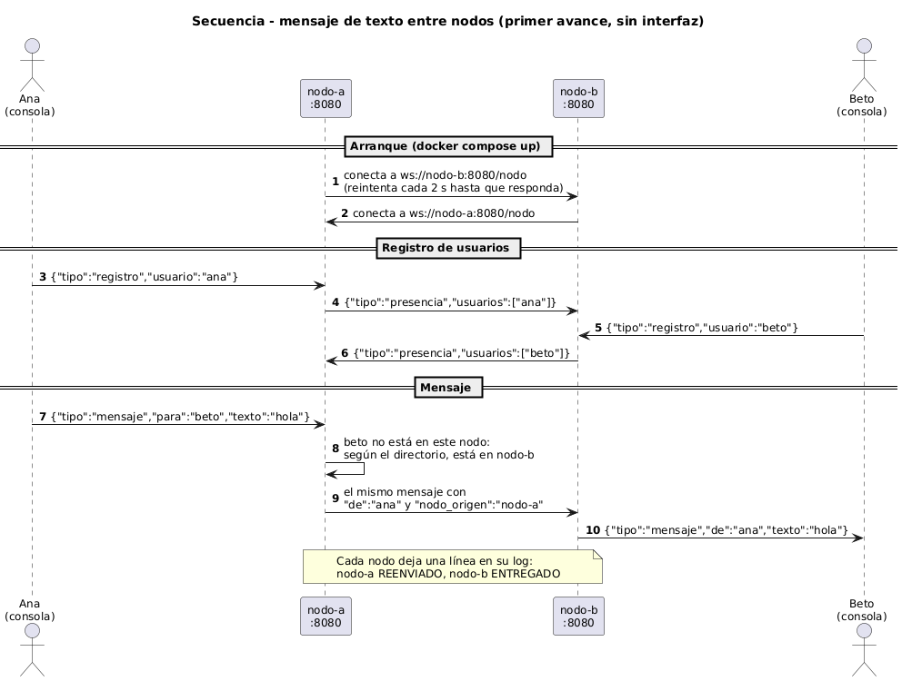
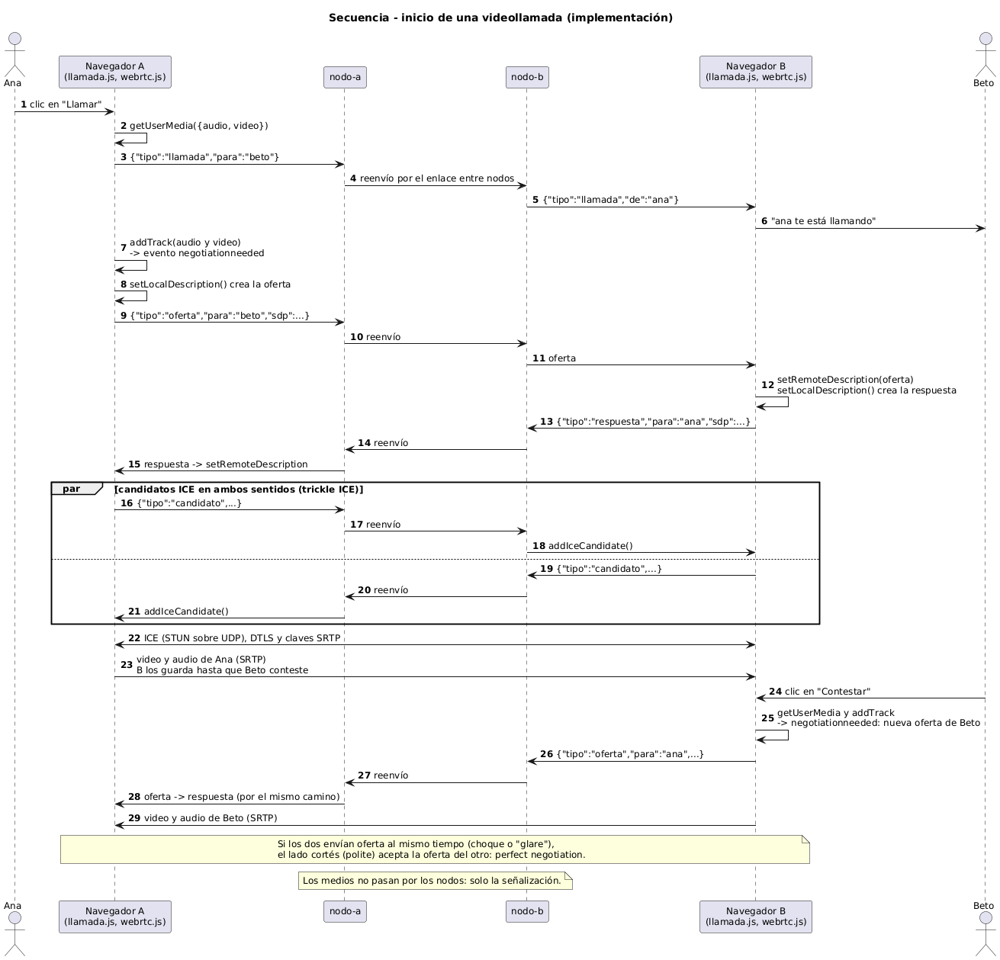
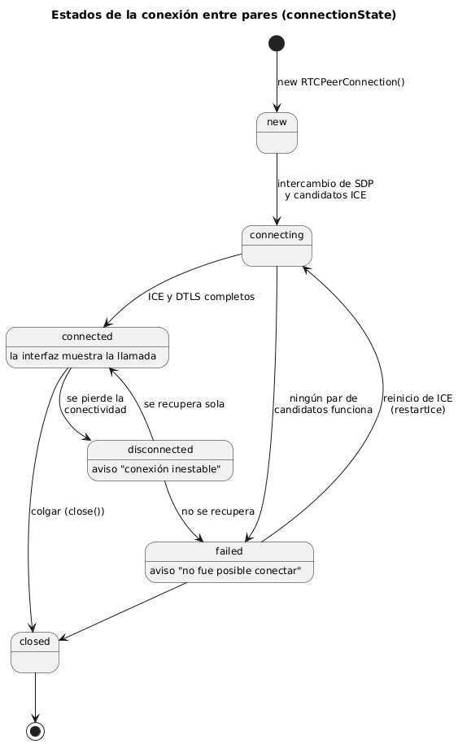

Este informe responde, con fuentes, las preguntas de la fase de investigación y termina con la arquitectura propuesta. Las referencias van entre corchetes, por ejemplo [3], y se listan al final. La plataforma elegida es Docker, así que del bloque A se responden las preguntas comunes y las de Docker.
A.1 ¿Qué diferencia hay entre virtualización completa y contenedores?
Una máquina virtual (MV) emula un computador completo sobre un hipervisor: cada MV arranca su propio núcleo y su sistema operativo invitado. Un contenedor es un proceso aislado que comparte el núcleo del anfitrión; el aislamiento lo dan los namespaces (qué ve el proceso) y los cgroups (cuántos recursos usa) del núcleo Linux [1][2].
| Criterio | Máquina virtual | Contenedor |
|---|---|---|
| Aislamiento | Fuerte: núcleo propio, frontera en el hipervisor. | Menor: comparten núcleo; una falla del núcleo afecta a todos. |
| Recursos | Alto: RAM y disco reservados para cada sistema invitado (GB). | Bajo: solo el proceso y sus librerías (MB). Felter et al. midieron rendimiento casi nativo en CPU y memoria [3]. |
| Arranque | Decenas de segundos (arranca un sistema operativo). | Menos de un segundo a pocos segundos (arranca un proceso). |
| Portabilidad | Imágenes de disco grandes, ligadas al hipervisor. | Imágenes en capas que corren igual en cualquier motor compatible con OCI. |
A.2 ¿Qué plataforma elegí y por qué?
Elegí Docker con Docker Compose. Gano: los dos nodos arrancan con un solo comando (docker compose up --build), la red y los nombres se declaran en un archivo, consume poca memoria (mi equipo corre los dos nodos sin problema) y es la herramienta que pide la industria. Pierdo frente a las MV: el aislamiento es menor, el contenedor no ve la cámara del anfitrión (no lo necesito, porque la captura ocurre en el navegador, ver D.2) y, en Windows, Docker Desktop corre los contenedores dentro de una MV ligera de WSL 2 [4], así que dependo de que esa capa funcione.
A.3 ¿Cómo se comunican dos nodos en una red virtual y cómo se encuentran por nombre?
Ambos nodos se conectan a la misma red virtual (un bridge de software): cada uno recibe una IP privada y se ven entre sí como en una LAN. Para no escribir IP en el código, un servicio de DNS traduce el nombre del nodo a su IP actual. En Docker ese DNS lo provee el propio motor en las redes definidas por el usuario (A.6).
A.4 Imagen frente a contenedor, e instrucciones del Dockerfile
Una imagen es una plantilla de solo lectura formada por capas; un contenedor es una instancia en ejecución de esa imagen con una capa de escritura propia [5]. De una imagen salen muchos contenedores (aquí, nodo-a y nodo-b salen de la misma). Instrucciones que usaré [6]: FROM (imagen base, node:22-alpine), WORKDIR (carpeta de trabajo), COPY (copia archivos del proyecto), RUN (ejecuta un comando al construir, p. ej. npm ci), ENV (variables de entorno), EXPOSE (documenta el puerto), USER (corre sin privilegios de root), HEALTHCHECK (comando que dice si el servicio está sano) y CMD (comando que arranca el contenedor).
A.5 Tipos de red de Docker y cuál conviene
| Red | Qué hace | ¿Sirve aquí? |
|---|---|---|
| bridge | Red privada en el anfitrión; los contenedores salen por NAT. La red por defecto no resuelve nombres; una definida por el usuario sí [7]. | Sí: aísla los nodos y les da DNS por nombre. |
| host | El contenedor usa la pila de red del anfitrión, sin aislamiento. | No: los dos nodos chocarían en el mismo puerto. |
| overlay | Une contenedores de varios anfitriones (Swarm). | No: todo corre en un solo equipo. |
| none | Sin red, solo interfaz de bucle local. | No: los nodos deben hablar. |
Elijo una red bridge definida por el usuario, llamada mensajero-red.
A.6 ¿Cómo se encuentran dos contenedores por nombre? Papel del DNS interno
En una red definida por el usuario, Docker ejecuta un servidor DNS embebido (en 127.0.0.11 dentro de cada contenedor) que resuelve el nombre del servicio o contenedor a su IP en esa red [7]. Por eso el nodo A se conecta a ws://nodo-b:8080/nodo y no a una IP fija: si el contenedor se recrea y cambia de IP, el nombre sigue funcionando.
A.7 Exponer frente a publicar un puerto
Exponer (EXPOSE) solo documenta en qué puerto escucha el contenedor; no abre nada hacia el anfitrión. Publicar (-p 8081:8080 o ports: en Compose) crea la regla para que el anfitrión reenvíe su puerto 8081 al 8080 del contenedor [6][8]. Entre contenedores de la misma red no hace falta publicar: se hablan directamente por el puerto interno.
A.8 ¿Qué resuelve Docker Compose?
Compose describe una aplicación de varios contenedores en un archivo YAML (la Compose Specification [9]) y la levanta con un comando. Se declaran servicios (services: con build, ports, environment, healthcheck), redes (networks:), variables de entorno (environment: o archivo .env) y volúmenes (volumes:, para datos que deben sobrevivir al contenedor). En este proyecto cada servicio recibe por variable su nombre (NODO_NOMBRE) y la dirección de su par (PAR_URL).
B.1 ¿Qué es WebRTC, qué resuelve y quién lo especifica?
WebRTC es un conjunto de API de navegador y protocolos que permite enviar audio, video y datos directamente entre navegadores, con baja latencia y cifrado obligatorio, sin plugins [10][11]. Resuelve la comunicación en tiempo real entre pares que normalmente están detrás de NAT. La API JavaScript la especifica el W3C (WebRTC 1.0 [10], Media Capture and Streams [16]) y los protocolos los especifica el IETF (grupo RTCWEB, RFC 8825 y relacionados [11]).
B.2 ¿Por qué necesita un servidor de señalización?
Antes de hablar directamente, los dos navegadores no saben uno del otro: no conocen la IP, los puertos ni los códecs del otro. WebRTC no define cómo intercambiar esa información [12]; cada aplicación usa su propio canal. Por él viajan: la presencia (quién está conectado), la oferta y la respuesta SDP, los candidatos ICE y los avisos de control (llamar, colgar). Los medios y los archivos no pasan por él.
B.3 SDP, oferta y respuesta. Pasos para establecer una sesión
SDP (Session Description Protocol, RFC 8866 [13]) es un texto que describe una sesión: medios, códecs, parámetros de cifrado (huella DTLS) y candidatos. El modelo oferta/respuesta (RFC 3264 [14], aplicado a WebRTC por JSEP, RFC 9429 [12]) consiste en que un lado propone y el otro acepta lo que soporta. Pasos:
getUserMedia) y crea un RTCPeerConnection con sus pistas.createOffer() y setLocalDescription(oferta), y envía la oferta por la señalización.setRemoteDescription(oferta), luego createAnswer() y setLocalDescription(respuesta), y la envía.setRemoteDescription(respuesta).addIceCandidate().B.4 ICE, STUN y TURN. ¿Cuándo se necesita cada uno?
| Protocolo | Qué hace | Escenario |
|---|---|---|
| ICE (RFC 8445 [17]) | Reúne candidatos (direcciones posibles) y prueba pares hasta encontrar uno que funcione. | Siempre: es el mecanismo base de WebRTC. |
| STUN (RFC 8489 [18]) | Un servidor le dice al cliente con qué IP y puerto públicos lo ve (candidato srflx). | Pares en redes distintas detrás de NAT "amigables". |
| TURN (RFC 8656 [19]) | Servidor que retransmite el tráfico cuando la conexión directa es imposible (candidato relay). | NAT simétrico o cortafuegos que bloquean UDP. Gasta ancho de banda del servidor. |
En este laboratorio los dos navegadores corren en el mismo equipo, así que bastan los candidatos host. Se dejará configurado un STUN público y, como opcional, un TURN con coturn.
B.5 ¿Qué es NAT y por qué complica la conexión directa?
NAT (RFC 3022 [20]) permite que muchos equipos con IP privada salgan a Internet con una sola IP pública, reescribiendo direcciones y puertos. El problema es que el router solo deja entrar respuestas a conexiones iniciadas desde dentro: un equipo externo no puede iniciar la conexión hacia una IP privada. Además, cada NAT asigna puertos con reglas distintas (RFC 4787 [21]); en el NAT simétrico el puerto cambia según el destino y el candidato obtenido por STUN deja de servir, por eso se necesita TURN.
C.1 ¿Qué es WebSocket y en qué se diferencia de HTTP con peticiones periódicas?
WebSocket (RFC 6455 [22]) empieza como una petición HTTP con cabecera Upgrade y, si el servidor acepta, la misma conexión TCP se vuelve un canal bidireccional y persistente de mensajes. Con HTTP periódico (polling) el cliente pregunta cada cierto tiempo: cada pregunta repite cabeceras, añade latencia de hasta un periodo completo y genera tráfico aunque no haya novedades [23]. En la señalización el servidor debe empujar la oferta o un candidato al instante, por eso WebSocket es lo adecuado.
C.2 Alternativas para la señalización
| Opción | Ventajas | Desventajas para este proyecto |
|---|---|---|
WebSocket puro (librería ws) | Estándar, bidireccional, mínimo; se prueba desde consola con wscat. | Hay que programar la reconexión y el enrutamiento. |
| Socket.IO [24] | Reconexión, salas y respaldo con long polling ya hechos. | Usa su propio protocolo sobre Engine.IO: un cliente WebSocket normal como wscat no puede hablarle; agrega dependencias. |
| SSE (Server-Sent Events) [25] | Simple, sobre HTTP normal. | Solo va del servidor al cliente; los envíos requieren otro canal (POST). |
| MQTT [26] | Publicar/suscribir muy eficiente, pensado para IoT. | Necesita un broker extra (p. ej. Mosquitto) y el navegador lo usaría sobre WebSocket de todos modos. |
Elijo WebSocket puro por ser estándar, liviano y demostrable desde la consola, que es justo lo que pide el primer avance.
C.3 Formato de los mensajes de señalización (propuesta)
Mensajes JSON, uno por trama de texto. Todo mensaje lleva tipo; los dirigidos llevan para, y el servidor agrega de, id, ts y nodo_origen (así el cliente no puede suplantar a otro y el nodo que recibe un reenvío no lo devuelve).
{"tipo":"registro","usuario":"ana"} cliente -> nodo
{"tipo":"registrado","usuario":"ana","nodo":"nodo-a"} nodo -> cliente
{"tipo":"presencia","usuarios":[{"usuario":"beto","nodo":"nodo-b"}]}
{"tipo":"mensaje","para":"beto","texto":"hola"} cliente -> nodo
{"tipo":"mensaje","id":"7f3c…","de":"ana","para":"beto","texto":"hola",
"ts":"2026-11-18T23:10:05.120Z","nodo_origen":"nodo-a"} nodo -> nodo -> cliente
{"tipo":"oferta"|"respuesta","para":"beto","sdp":"v=0…"}
{"tipo":"candidato","para":"beto","candidato":{…RTCIceCandidateInit…}}
{"tipo":"colgar","para":"beto"}
{"tipo":"error","motivo":"usuario 'carlos' no está conectado"}
D.1 ¿Cómo accede el navegador a la cámara y al micrófono?
Con navigator.mediaDevices.getUserMedia({audio, video}), que devuelve un MediaStream con pistas [16]. Restricciones: la API solo existe en un contexto seguro (HTTPS, o http://localhost, que el estándar considera "potencialmente confiable" [27]); el usuario debe conceder el permiso; y si lo niega, la promesa falla con NotAllowedError, que la interfaz debe mostrar. Si la página se abre por la IP del equipo con HTTP (no localhost), el navegador bloquea la cámara: en ese caso se servirá por HTTPS con un proxy inverso (Caddy).
D.2 ¿Por qué un contenedor no accede a la cámara? ¿Dónde ocurre la captura?
Un contenedor solo ve los dispositivos que se le pasan explícitamente (--device), y en Windows además corre dentro de la MV de WSL 2, que no tiene la cámara USB del anfitrión [4]. No es un problema: en mi arquitectura la captura ocurre en el navegador del anfitrión; los contenedores solo sirven la página y hacen la señalización, y los medios van de navegador a navegador.
D.3 Códecs: qué son y cuáles negocian los navegadores
Un códec (codificador-decodificador) comprime la señal para transmitirla y la reconstruye al recibirla; casi todos son con pérdida y aprovechan la redundancia espacial (dentro de un cuadro) y temporal (entre cuadros I, P y B). Por norma, todo navegador WebRTC debe soportar VP8 y H.264 en video [28] y Opus y G.711 en audio [29]; Chrome y Edge negocian además VP9 y AV1. La lista real del navegador se ve con RTCRtpSender.getCapabilities("video"). Partí de la lectura de MirrorFly [30] y la contrasté con las RFC y con el artículo técnico de AV1 [31]:
| Códec | Compresión | CPU | Compatibilidad | Licencia |
|---|---|---|---|---|
| H.264 (AVC) | Base de referencia. | Baja; aceleración por hardware casi universal. | Obligatorio en WebRTC [28]; el más compatible. | Patentes en consorcio (Via LA); Cisco paga las regalías de su binario OpenH264. |
| VP8 | Similar a H.264. | Baja. | Obligatorio en WebRTC [28]. | Libre de regalías (Google, BSD). |
| VP9 | Mejor que VP8/H.264 a igual calidad. | Media; hardware menos común. | Chrome, Edge y Firefox. | Libre de regalías (Google). |
| AV1 | La mejor: del orden de 30 % menos bits que VP9 en las pruebas del equipo de desarrollo [31]. | Alta para codificar sin hardware. | Navegadores recientes; dispositivos viejos no lo aceleran. | Libre de regalías (Alliance for Open Media). |
| Opus (audio) | Voz y música de 6 a 510 kbit/s, adaptable [32]. | Baja. | Obligatorio en WebRTC [29]. | Libre (BSD, IETF). |
Decisión: dejar que el navegador negocie (normalmente VP8 o H.264 con Opus), porque los dos navegadores del laboratorio son iguales y estos códecs consumen poca CPU, algo importante con dos navegadores y Docker en el mismo equipo.
D.4 ¿Qué ancho de banda requiere una videollamada?
Depende del códec y del movimiento en escena, porque WebRTC adapta la tasa de bits a la red. Como referencia, la documentación de Zoom pide unos 0,6 Mbit/s por sentido para video de calidad normal y 1,2 Mbit/s para 720p [33]. Estimación para este proyecto, por sentido: 480p ≈ 0,5 a 1 Mbit/s y 720p ≈ 1,2 a 2,5 Mbit/s, más unos 32 a 64 kbit/s de audio Opus. En la fase 3 lo mediré con RTCPeerConnection.getStats().
E.1 ¿Qué es un RTCDataChannel? Confiable frente a no confiable
Es un canal de datos arbitrarios entre pares que viaja por SCTP sobre DTLS sobre UDP, dentro de la misma conexión ICE de la llamada (RFC 8831 [34]). Por defecto es confiable y ordenado (como TCP: retransmite lo perdido). Si se crea con maxRetransmits o maxPacketLifeTime pasa a no confiable (como UDP: lo que se pierde no se reenvía), útil para datos donde llegar tarde equivale a no llegar, como la posición en un juego. Para archivos y chat se usa el confiable.
E.2 ¿Por qué fragmentar un archivo grande y cómo controlar el búfer?
Cada send() es un mensaje SCTP; los mensajes muy grandes no son interoperables entre navegadores, y la recomendación práctica es no pasar de 16 KiB [35]. Además, cargar 20 MB en un solo mensaje bloquea el canal y la memoria. Por eso el archivo se lee por trozos de 16 KiB (Blob.slice). Para no saturar, se revisa bufferedAmount (bytes pendientes en el canal) y, si pasa de un umbral (1 MiB), se pausa hasta el evento bufferedamountlow, configurado con bufferedAmountLowThreshold [10].
E.3 Alternativa: enviar el archivo por HTTP a través del servidor
El emisor sube el archivo con un POST multipart/form-data y el receptor lo descarga del nodo. Ventajas: es sencillo, funciona aunque falle la conexión P2P y el receptor puede bajarlo después aunque no esté conectado. Desventajas: el archivo pasa dos veces por el servidor (más carga y almacenamiento), deja de ser de extremo a extremo (el nodo lo puede leer) y hay que gestionar límites de tamaño y borrado. Elijo el DataChannel por ser directo y cifrado entre pares, y dejo el HTTP como posible respaldo.
E.4 ¿Cómo verifica el receptor que el archivo llegó completo e íntegro?
El emisor manda primero un mensaje de inicio con nombre, tamaño y huella SHA-256 calculada con la Web Crypto API [36]. El receptor cuenta los bytes y, al recibir el mensaje de fin, une los fragmentos, calcula su propio SHA-256 y lo compara. Si el tamaño o la huella no coinciden, o el canal se cierra antes del fin, marca el archivo como interrumpido. DTLS ya protege cada paquete; el hash protege el archivo completo tras reensamblarlo.
F.1 Lenguaje y framework del servidor
Node.js 22 (LTS) con la librería ws. Node maneja miles de conexiones con un solo hilo y un bucle de eventos, ideal para un servidor que casi solo reenvía mensajes pequeños [37]; ws implementa RFC 6455 sin capas extra [38], y el mismo lenguaje (JavaScript) se usa en el navegador. Alternativa descartada: Python con websockets/asyncio, igual de capaz, pero obligaría a manejar dos lenguajes y su imagen Docker es más pesada.
F.2 Interfaz: HTML y JavaScript puro o framework
HTML, CSS y JavaScript puro. La interfaz es una sola pantalla y las API de WebRTC son del navegador; un framework (React, Vue) no aporta mucho y obliga a un paso de compilación. Alternativa descartada: React, por esa complejidad extra.
F.3 Bosquejo de la interfaz

Cada nodo es un contenedor con la misma imagen y un solo proceso Node.js que atiende, en el puerto 8080: archivos estáticos y /salud por HTTP, clientes por WebSocket en /ws y el otro nodo por WebSocket en /nodo. Cada usuario se conecta a su nodo; si el destinatario está en el otro nodo, el mensaje se reenvía por el enlace entre nodos, que se abre por nombre (nodo-a, nodo-b). El chat de texto viaja por la señalización (queda en los logs y funciona sin llamada); medios y archivos van de navegador a navegador con WebRTC. Las fuentes de los diagramas están en docs/uml/.





| Componente | Elección | Alternativa descartada y motivo |
|---|---|---|
| Plataforma de nodos | Docker + Docker Compose | Máquinas virtuales (VirtualBox + Vagrant): más memoria y arranque lento. |
| Imagen base | node:22-alpine | node:22 (Debian): varias veces más grande. |
| Red | Bridge definida por el usuario | Bridge por defecto: no resuelve nombres. Host: sin aislamiento. |
| Servidor | Node.js 22 + ws | Python + websockets: segundo lenguaje e imagen más pesada. |
| Señalización | WebSocket con JSON propio | Socket.IO: protocolo propio, no se prueba con wscat. |
| Interfaz | HTML, CSS y JS puro | React: paso de compilación innecesario. |
| Medios | WebRTC, códecs negociados (VP8/H.264 + Opus) | Forzar AV1: más CPU sin aceleración. |
| Archivos | RTCDataChannel confiable, 16 KiB, SHA-256 | Subida HTTP: pasa por el servidor y no es extremo a extremo. |
| NAT | STUN público; TURN con coturn opcional | Solo TURN: retransmite todo y gasta más. |
| HTTPS (fase 3) | Caddy como proxy inverso | Nginx: el certificado se configura a mano. |
| Diagramas | PlantUML (en Docker) | draw.io: el archivo fuente no se lee en texto. |
| Riesgo | Mitigación |
|---|---|
| El navegador bloquea la cámara si se abre por IP y no por localhost. | Usar http://localhost:8081 y :8082; para otro equipo, Caddy con HTTPS. |
| Un nodo arranca antes que el otro y el enlace falla. | Reintento automático cada 2 s y healthcheck en Compose. |
| Un nodo se cae a mitad de una conversación. | Los clientes reciben la presencia actualizada; el otro nodo lo registra y reintenta. |
| El cortafuegos de Windows bloquea UDP entre redes distintas. | Pruebas en el mismo equipo; TURN (coturn) como opción. |
| Un archivo de 20 MB satura memoria o canal. | Fragmentos de 16 KiB y control con bufferedAmount. |
| Docker Desktop o WSL 2 no arrancan en el equipo de la sustentación. | Probar antes; grabar el video de demostración como respaldo. |
| Poco tiempo entre el seguimiento y la entrega final. | Dejar la señalización ya preparada para oferta, respuesta y candidatos desde la fase 2. |